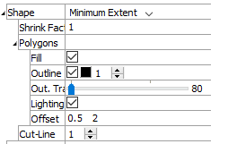
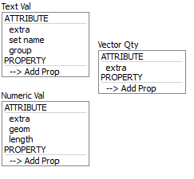
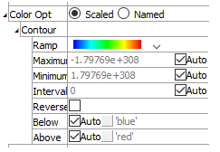
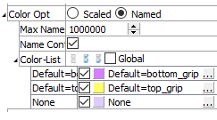

Fracture Intersections Plot Item
Description
Fracture intersections colored by attributes or properties.
This plot item observes the Shape/Color By/Color Opt pattern to determine its rendering.
Attributes
Shape
Specify the shape the plot item will assume when rendered. If “Minimum extent” is selected, the item is rendered as cubes of a size corresponding to the selected extent. The Shape attribute is also a container for additional controls as listed below.
If “Intersection” is selected for Shape:
Shrink Factor: Scale the object as a multiple of the value supplied; 1 = full size, .5 = 50%, 2 = 200%, etc.
Line: Set the line style and width.
If “Minimum Extent” is selected for Shape:
Refer to the Shape attribute of the Fractures plot item (and see image above); the available attributes are the same.
Color By
Specify what aspect of the item is to be rendered, from one of three mutually exclusive groups (only one selection from any group is active at one time): textual values, numeric values, and vector quantities. If a Vector Qty is chosen, an additional field is added to specify whether a component (\(x\), \(y\), or \(z\)) or the magnitude (mag) of the vector should be rendered.
Selecting -->Add Prop at the bottom of a selector will provide a dialog that allows the user to specify a new property to add to the list (and make it the active color by selection).
The labels ATTRIBUTE and PROPERTY on a selector do nothing; these are provided to assist with group differentiation.
| extra | Colors by extra variable. When selected, an additional field is supplied to identify the variable by its index. |
| set name | |
| group | Colors by group. When selected, an additional field is supplied to specify the slot index. The default setting is Any (which occupies index position 0 on the spinbox). |
| extra | Colors by extra variable. When selected, an additional field is supplied to identify the variable by its index. |
| geom | |
| length |
| extra | Colors by extra variable. When selected, an additional field is supplied to identify the variable by its index. |
Color Opt
Specify options for coloring the plot item. This must be set to either scaled (contoured) coloring, or coloring based on named items (group names, for instance). The former is the default option for numeric or vector items as set with the Color By attribute; the latter is the default setting when a textual value is specified with Color By. Setting ColorOpt to “scaled” on a textual value will result in nothing rendered. Setting a numeric or vector quantity to “named” causes the values within the numeric range to be treated as separate “names” to be colored, where the number of names is governed by the “max-names” sub-attribute.
Scaled
When scaled is selected, coloring is controlled by the following sub-attributes.
Contour: A container for settings that control contouring options.
Ramp: Set the color ramp to use for rendering. The five options, in order shown in the select box, are: rainbow (blue to red), grayscale, blue-white-red, blue-cyan-white-yellow-red, green-white-red.
Maximum: Set the highest value (right end) of the color ramp automatically (auto checked) or with a specified value (auto unchecked). Values above Maximum are filled with the Above color.
Minimum: Set the lowest value (left end) of the color ramp automatically (auto checked) or with a specified value (auto unchecked). Values below Minimum are filled with the Below color.
Interval: Specify the number of color intervals used in when rendering; this value defaults to a number between 8-16 if auto is checked.
Log Scale: Specify that the color intervals are logarithmically spaced when checked.
Reversed: Reverse the color sequence of the color ramp when checked.
Below: Specify which color to use for values below the Minimum. The left end of the color ramp is used with auto checked. When unchecked, the color swatch control specifies the color.
Above: Specify which color to use for values above the Maximum. The right end of the color ramp is used with auto checked. When unchecked, the color swatch control specifies the color.
Named
When named is selected, coloring is controlled by the following sub-attributes.
Max Names: Specify the maximum number of names and, correspondingly, the maximum number of unique colors, to be used. If more unique names exist they are assigned the name unknown and colored by a single color. The default value is 30.
Name Cont: Specify the existence of name or color controls. When many unique names (or colors) exist, the presence of the controls for each color drastically reduces rendering performance. By unchecking this option, many unique colors can be rendered efficiently.
Color List: If the plot item has selectable color items, the edit/spinbox allows specification of the number of colors to use when rendering the item. Additionally, the adjacent buttons (select all, select none, invert selection) will be active. If the plot item does not contain selectable color items, these controls are disabled. In any context, if there are colors present (colors > 0), this sub-attribute can be opened to show the list of colors used to render the plot item. The color swatches in the list may be used to change the color at the selected position. The text label adjacent to the color swatch may be edited. If there are selectable color items, each color item in the list will start with a checkbox that can be used to show (checked) or hide (unchecked) the item.
Display

Set display off/on for distinct sets.
Display (checkbox on item name): Check an item in the list to include it in the display. Uncheck the item to hide it.
Map

Map the item to new model coordinates. See the standard map control description for details.
Legend

Set item labeling in the plot legend. See the standard legend control description for details.
Beneath Title, the Fracture Intersection plot item also provides controls in the legend for Count, Named, and Scaled. The sub-attributes of each are the same as those for Title.
| Was this helpful? ... | UDEC © 2018, Itasca | Updated: Mar 15, 2024 |